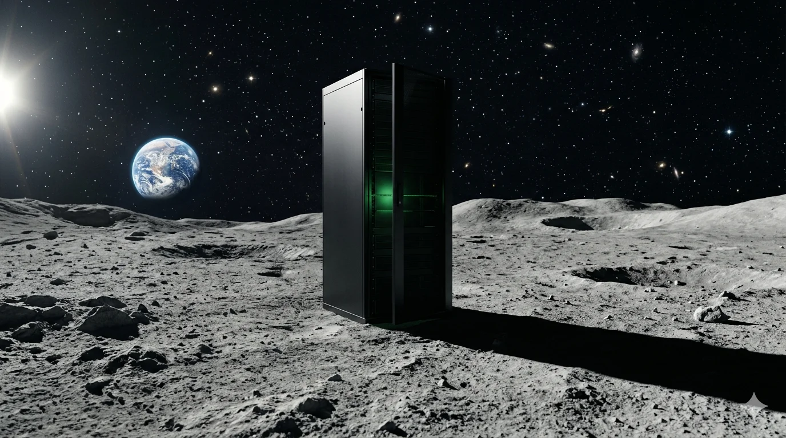
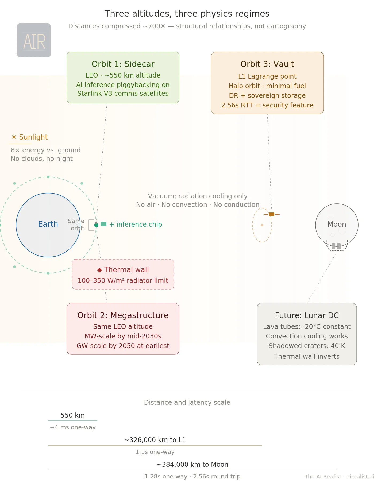
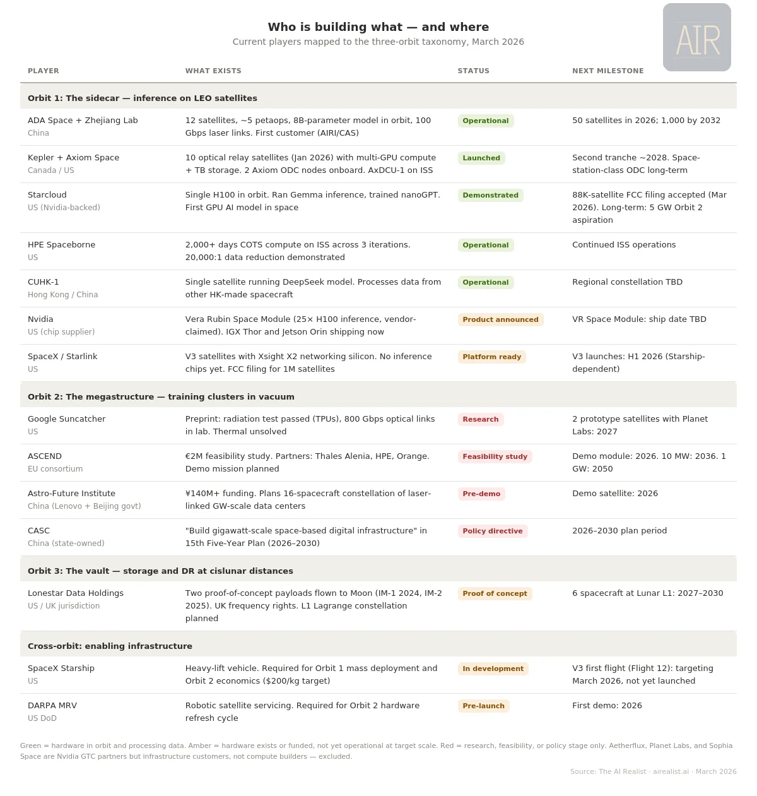

On February 2, 2026, Elon Musk published a blog post announcing what SpaceX called the largest corporate merger in history. SpaceX would acquire xAI — his artificial intelligence company — at a combined valuation of $1.25 trillion. The stated reason: to build orbital data centers.[1] Three days earlier, SpaceX had filed an application with the Federal Communications Commission for permission to launch up to one million satellites.[2]
Twelve time zones away, in Chengdu, a company called ADA Space was running AI inference on twelve satellites it had launched the previous May. Each carried domestically designed accelerators delivering 744 trillion operations per second at INT8 precision — roughly equivalent, at that precision, to a single high-end AI server on the ground. Except that this server was not in a rack. It was distributed across 12 coordinated satellites, connected by 100-gigabit-per-second laser links. The constellation had already served its first commercial customer — the Aerospace Information Research Institute of the Chinese Academy of Sciences.[3] It was the first operational AI compute cluster in orbit. And it was Chinese.
In Mountain View, Google’s Project Suncatcher team had just published a preprint laying out the engineering requirements for space-based machine learning at scale. Their conclusion: the economics work when launch costs fall below $200 per kilogram — roughly seven to fifteen times cheaper than today, depending on the launch provider. Their projected timeline: the mid-2030s.[4]
And at Cape Canaveral, Lonestar Data Holdings was preparing to launch a one-kilogram data center to the Moon — eight terabytes of solid-state storage in a box the size of a hardback novel, riding an Intuitive Machines lunar lander.[5]
One term covers all of this. “Datacenters in space.” But these four efforts share almost nothing — not physics, not economics, not timeline, not customer. There are three fundamentally different propositions hiding inside that phrase, and the most consequential engineering and policy decisions in AI infrastructure depend on knowing which one is actually being proposed.
Earth is full
The case for computing in orbit starts on the ground.
Global data center electricity consumption is on track to exceed 1,000 terawatt-hours by the end of 2026 — roughly equivalent to Japan’s entire national electricity demand.[6] In the United States, data centers will account for nearly half of electricity demand growth through 2030.[7] Dominion Energy in northern Virginia, the world’s largest data center market, has a multi-year interconnection queue. New transmission lines take a decade to permit. New generation takes longer. Local officials have begun blocking new server farms that strain grids, consume water, and swallow land.[7]
Every terrestrial alternative has its own timeline problem. Small modular reactors are post-2030 at the earliest — a technology I will analyze in a separate piece soon.[8] Renewables at the required scale need land and storage that create their own political fights. Natural gas faces emissions scrutiny. The honest assessment: no single terrestrial solution scales fast enough to meet projected AI compute demand in the 2028–2035 window.
This is why serious organizations are spending serious money on orbital compute. Google has committed research resources and a 2027 prototype launch. The European Commission funded a sixteen-month feasibility study. China has hardware in orbit. Nvidia just announced a purpose-built AI chip for orbital data centers — the Vera Rubin Space Module — at its annual conference.[9]
In a sun-synchronous dawn-dusk orbit, the satellite perpetually rides the boundary between day and night on Earth, so its solar panels face the Sun almost continuously. In this configuration, a solar panel generates up to eight times more energy per unit area than a typical ground-based solar panel. No night cycle, no clouds, no atmospheric absorption, 36 percent stronger sunlight above the atmosphere.[10] That is not marketing. That is orbital mechanics.
But acknowledging the pull does not validate the specific claims being made — or the timelines attached to them. And this is where the analysis requires a taxonomy that the current debate lacks. Three orbits. Three physics constraints. Three cost structures. Three radically different timelines. The rest of this piece walks through each orbit and shows what each announcement about “datacenters in space” actually claims — and what the engineering actually supports.

Orbit 1: The sidecar
The most viable form of orbital compute is the one getting the least attention.
SpaceX’s next-generation Starlink V3 satellites, expected to begin launching in the first half of 2026 aboard the Starship rocket (itself still in development), are not dumb transponders. Each carries an Xsight Labs X2 networking chip capable of processing 12.8 terabits per second — a specialized processor that routes data between satellites via laser links, and steers signals down to users on the ground.[11] At roughly 1,250 kilograms, with an estimated 10 to 20 kilowatts of solar power and over one terabit per second of downlink capacity, V3 represents a tenfold leap over the current V2 Mini generation.[12] The V3 deployment timeline is coupled to Starship’s maturation — if Starship continues to experience delays, Orbit 1 slides with it.
The step from a networking chip to an AI inference chip is small on a satellite that already manages power and thermal dissipation. SpaceX has already solved the hard parts of operating computing hardware in orbit — at a production rate of over 2,300 satellites launched in 2025 alone.[13] Adding a low-power inference chip to each V3 is a modest hardware decision, not a new space program. The distinction between inference and training matters for everything that follows: inference answers questions from a pre-trained model using a single chip at modest power; training builds the model in the first place, requiring thousands of chips in tight synchronization for weeks. Orbit 1 is an inference play. Orbit 2 claims to be a training play. The physics of each is fundamentally different.
The economics of piggybacking are compelling. A satellite that already costs several hundred thousand dollars to manufacture and launch absorbs the marginal cost of a low-power inference accelerator without a fundamental redesign. On March 16, 2026, Nvidia announced the Vera Rubin Space Module at its annual GTC developer conference, a variant of its next-generation AI architecture designed specifically for orbital data centers, delivering, the company claims, 25 times the inference performance of the H100 that Starcloud flew last November.[52] The supply side of Orbit 1 just materialized as a named product on a roadmap.
Adding compute to a mass-optimized satellite increases thermal load on an already-tight power budget. But allocating two to three kilowatts of an estimated 10-to-20-kilowatt envelope to inference does not gut the communications mission — the costs are manageable within an existing satellite program’s budget, not a separate capital campaign. The constraint is model size: at two to three kilowatts, a sidecar chip can run models in the single-digit-billion-parameter range — useful for classification, summarization, and image analysis, but not for the largest frontier models. Nvidia’s Vera Rubin Space Module may push that ceiling higher, but the power envelope, not the chip, is the binding limit.
This is the evolution of content delivery networks applied to AI. Akamai didn’t replace the websites it served — it cached copies closer to users so a customer in Tokyo didn’t have to fetch data from Virginia. A Starlink inference layer would work the same way: not replacing the training cluster in Iowa but serving pre-trained models from overhead, with as little as four milliseconds of one-way propagation delay. A new computing tier — global, always overhead, and available to the three billion people who live beyond reliable terrestrial broadband.[59]
The concept is no longer theoretical. ADA Space’s twelve-satellite cluster in China runs an eight-billion-parameter model in orbit and has served its first commercial customer.[14] Starcloud flew a single H100 in orbit last year and has since filed with the FCC for an 88,000-satellite constellation.[64] HPE’s Spaceborne Computer — built by Hewlett Packard Enterprise — has logged over 2,000 days on the International Space Station, demonstrating a 20,000-to-one data reduction ratio.[15] In January 2026, Kepler Communications launched ten optical relay satellites with multi-GPU compute, and Axiom Space bought two orbital data center nodes on the network.[53][54] Orbit 1 is a category in formation, with operational hardware from at least four organizations across three countries. The first flights have happened. The chip vendor just showed up.
The SpaceX FCC filing, read charitably, describes this architecture. It specifies “distributed processing nodes, specifically optimized for large-scale AI inference” that could be built “simply by scaling up the Starlink V3 satellites.”[16] As a natural extension of an existing constellation with an existing manufacturing line, existing launch schedule, and existing customer base, Orbit 1 is commercially plausible within two to four years — a timeline based on SpaceX’s V3 development cadence and Nvidia’s product announcements, not on independent analysis.
Orbit 1 is being conflated with something far more ambitious — and the engineering gap between them is the subject of this piece.
Orbit 2: The megastructure
The headline narrative — the one behind the million-satellite filing — is gigawatt-scale training clusters in orbit, powered by solar arrays measured in square kilometers. It faces a physics constraint that no amount of venture capital can repeal. But even the realistic near-term version, at a fraction of that scale, faces a cost problem that its proponents have not yet solved.
In a vacuum, heat can only be radiated away. The Stefan-Boltzmann law — which governs how objects radiate heat — dictates that at the temperatures at which electronics operate, a radiator surface emits roughly 100 to 350 watts per square meter.[17] The International Space Station’s active thermal control system dissipates approximately 70 kilowatts through ammonia-cooling loops and radiator panels — enough to cool roughly 100 high-end GPUs, or about 12 server racks.[18] A single modern AI-optimized rack can draw 100 to 200 kilowatts, meaning the ISS’s entire thermal budget could not cool a handful of them. A gigawatt-class data center — the scale that the EU-funded ASCEND project, a European consortium pursuing orbital data sovereignty, aims to reach by 2050 — would require a radiator surface area approaching one square kilometer, weighing thousands of tons.[19]
But no credible player is targeting a centralized gigawatt before 2050. ASCEND’s near-term milestone is 10 megawatts by 2036 — a hundred times smaller. The thermal math is more forgiving at that scale: roughly 30,000 square meters of radiator area, weighing approximately 80 tons.[19] That is still the largest structure ever assembled in orbit by an order of magnitude — but it is an engineering program, not a physics impossibility. The problem is what 10 megawatts buys you: roughly 5,000 to 8,000 high-end GPUs at rack-level power density. Enough for fine-tuning, smaller model training, and meaningful inference — but not a frontier training cluster, which currently requires 16,000 to 100,000 GPUs. At 10 megawatts, Orbit 2 is a subscale facility that costs three times as much as a terrestrial facility of the same size. The thermal wall at the gigawatt scale is a physics wall. At a 10 megawatt scale, it becomes a cost wall — and the cost case has not been made.
The distributed alternative
SpaceX’s FCC filing proposes a different path: not one big facility but a million distributed satellites at roughly 100 kilowatts each, aggregating to 100 gigawatts.[60] At the per-satellite level, the thermal math is manageable—roughly 40 to 70 square meters of radiator per satellite —feasible as a subsystem.[61] The full satellite at 100 kilowatts, however, would require 90 to 170 square meters of total deployed area, including solar arrays — three to six times a current Starlink — making it a significant redesign, not a sidecar modification.
The distributed architecture dissolves the thermal wall by refusing to concentrate it. But it runs into a different wall: interconnect. Frontier model training requires thousands of GPUs working in microsecond-level synchronization across shared memory — the kind of tight coupling that technologies like NVLink and InfiniBand — the high-speed wiring between GPUs inside a data center — provide on the ground.[63] Spread those GPUs across satellites connected by laser links at millisecond latencies — three orders of magnitude slower —, and you cannot train a frontier model. Google’s Suncatcher paper uses an 81-satellite cluster as a reference architecture for cost modeling and demonstrated 800-gigabit-per-second optical links in a lab.[21] Raw bandwidth at that speed is comparable to a single InfiniBand link between servers in a terrestrial cluster — but the latency is a thousand times worse, and in this comparison it is the latency, not the bandwidth, that blocks training. This is why Suncatcher’s own paper flags thermal management, not interconnect, as the binding constraint: the team believes the bandwidth problem is tractable while the thermal problem is not. At millisecond latencies, training must be restructured so aggressively that the result is no longer a substitute for terrestrial clusters — a problem the paper does not address.
Techniques for relaxing these constraints exist. DeepMind’s DiLoCo demonstrated training across poorly connected nodes by synchronizing only every 500 optimization steps instead of every step, reducing communication frequency by roughly 500 times.[65] Less frequent synchronization makes high latency more tolerable: if nodes only need to exchange data every few minutes rather than every few milliseconds, a thousand-fold latency gap matters less. But removing the interconnect wall does not remove the cost wall. DiLoCo trades communication for compute — each worker runs hundreds of local optimization steps between synchronizations — which compounds the cost disadvantage of orbital hardware, estimated at 3x that of terrestrial hardware. Solving the interconnect problem still leaves you training in orbit at a multiple of the cost on the ground, with more difficult maintenance, shorter hardware lifespans, and no way to swap a failed GPU without a launch.
What distributed orbital compute can do is run inference, fine-tune smaller models, and process satellite imagery — all of which Orbit 1 piggybacks on distributed satellites, scaled to enormous size. The distributed architecture is not a path to Orbit 2. It is Orbit 1 at the constellation scale, marketed as Orbit 2.
Google’s Suncatcher radiation testing reinforces the case for Orbit 1: Trillium TPU chips — Google’s custom AI processors — survived a proton beam simulating five years of low-Earth-orbit exposure with no permanent failures, suggesting commercial AI processors are more radiation-tolerant than assumed.[20] But thermal management remains, in the paper’s own words, “a critical optimization challenge.”[22]
The economics
The economics hinge entirely on a launch cost threshold that does not yet exist. Google projects that costs must fall below $200 per kilogram for orbital data centers to approach terrestrial competitiveness. The current range is $1,500 to $2,900 per kilogram.[23] An academic analysis of 3,207 satellites launched between 2000 and 2020 found that launch costs declined at 4.4 percent annually — a trajectory that reaches $200 per kilogram between 2045 and 2076, substantially slower than SpaceX’s promotional timeline.[24]
SpaceX’s Starship could accelerate that curve if it achieves full reusability, flights every week or more, and 100-to-200-ton payloads. None of these has been demonstrated. Starship has flown eleven times since 2023, with mixed results — booster catches succeeded, but two upper stages were lost during ascent, and no flight has yet reached a full orbital trajectory.[25] SpaceX’s historical learning rate on Falcon 9 is steeper than the academic average, and Starship may follow the same pattern — a concession worth making. But even at $200 per kilogram, an independent analysis by Andrew McCalip of Varda Space Industries shows that orbital data centers cost approximately three times as much as terrestrial equivalents.[26]
Launch cost is necessary but not sufficient — it must be accompanied by breakthroughs in thermal management, radiation tolerance, and on-orbit maintenance. Power generation is cheap in orbit — orbital compute startups estimate energy costs 10 to 50 times lower per kilowatt-hour than terrestrial grid power — but it is a minor fraction of total ownership costs. Launch, hardware refresh, and servicing dominate the economics, and those costs have no equivalent to the solar advantage. Rockets get cheaper by manufacturing iteration. Radiators improve through physics research — a slower, less predictable curve.
The hardware refresh problem compounds the difficulty. GPU architectures improve on a 2- to 3-year cycle. On Earth, a rack swap takes hours. In orbit, every upgrade is a launch. A chip launched in 2028 is architecturally obsolete by 2031, but must still operate to amortize its deployment cost. DARPA — the Pentagon’s advanced research agency — is launching its Mission Robotic Vehicle in 2026 in the first demonstration of robotic satellite servicing, but replacing compute modules is years beyond even that milestone.[27]
Orbit 2 has a direct historical precedent: space-based solar power, studied since Peter Glaser’s 1973 patent. In the more than fifty years since, $879 million across 157 projects has produced zero operational systems, and NASA has found orbital solar still twelve to eighty times more expensive than ground-based alternatives.[28][29] The barriers — extreme launch costs, kilometer-scale structures, hardware degradation, and the relentless improvement of cheaper terrestrial alternatives — are the same four barriers facing any centralized Orbit 2 architecture. The distributed alternative dissolves the second barrier but introduces others: interconnect latency that blocks training, constellation management at a million-satellite scale, and hardware refresh economics that compound across the fleet.
The critical difference is scalability. Space solar requires massive structures before producing any useful output; orbital compute can scale incrementally, as Orbit 1 demonstrates. But Orbit 2 at any scale that justifies the narrative — gigawatt-scale orbital compute, a target that Jeff Bezos has also endorsed with a “ten-plus years” timeline[62] — requires exactly the kind of massive structures that space-based solar power has failed to build for half a century. At 10 megawatts, the physics becomes manageable, but McCalip’s three-to-one cost ratio holds. At the gigawatt scale, the physics itself is the barrier. Musk’s claim that orbital data centers will be the cheapest way to generate AI compute “within two to three years” is not supported by any published engineering analysis — not Google’s, not NASA’s, not the independent assessments.[30] It is an assertion without a thermal management plan, a launch cost trajectory, or a servicing architecture.
Orbit 3: The vault
From off-site backup to off-planet backup.
Lonestar Data Holdings is the only company attempting this. Founded by Chris Stott — a twenty-year veteran of international spectrum regulation who co-founded ManSat, a satellite licensing firm — the company has flown two proof-of-concept payloads to the Moon on Intuitive Machines landers.[5] Its pitch: disaster recovery and sovereign data storage at a distance no terrestrial threat can reach. The Moon inverts several of the key constraints that make Orbit 2 so difficult.
Lunar lava tubes — underground channels carved by ancient volcanic flows — maintain a constant temperature of roughly minus 20 degrees Celsius.[31] If pressurized, these tubes would allow convection-based cooling — air and liquid carrying heat away from processors, as on Earth — unlike the pure vacuum of orbital space. Pressurizing a lava tube section is itself a formidable challenge: the largest pressurized structure ever built in space is the International Space Station at 916 cubic meters, and lunar lava tubes can be hundreds of meters across. Sourcing coolant from lunar ice extraction — itself undemonstrated at an industrial scale — adds another layer of infrastructure dependency. The physics favors the Moon; the engineering to exploit it does not yet exist.
Even on the open lunar surface, permanently shadowed craters at the south pole reach temperatures as low as 40 Kelvin, minus 233 degrees Celsius, colder than the surface of Pluto. The thermal wall that dominates Orbit 2 becomes, on the Moon, an engineering advantage — though one that fully materializes only when hardware moves into pressurized lunar structures.
Lonestar’s long-term vision targets exactly that: racks humming in the permanent dark of a lava tube. But the company cannot wait for lunar pressurization to become viable, and recent experience — the IM-2 lander tipped over on arrival — demonstrates that even landing on the surface remains unreliable. So the near-term architecture has moved off the surface entirely, to the L1 Lagrange point — a gravitational equilibrium between Earth and the Moon where a spacecraft can park with minimal fuel.[33] L1 is unstable, requiring periodic thruster corrections, yet it remains the cheapest long-term address between Earth and the Moon. A spacecraft there experiences only four hours of shade every 90 days — solving the lunar night problem, since any fixed point on the Moon’s surface endures fourteen days of continuous darkness. The company plans to launch six data storage spacecraft at Lunar L1 between 2027 and 2030, each carrying multi-petabyte storage and edge processing capabilities.[34]
The latency is disqualifying for real-time applications and irrelevant for the actual use case. Earth-Moon round-trip communication takes approximately 2.56 seconds — permanently eliminating interactive workloads. But Lonestar is not selling low-latency inference. It is selling disaster recovery and sovereign data storage, workloads where high latency is a feature, not a penalty. A ransomware attack cannot encrypt data that sits 384,000 kilometers away with a 2.56-second speed-of-light delay per query.[32]
Disaster recovery planning has gone from Cold War bunkers to colocation facilities to cloud regions to Amazon Glacier. The next step is 384,000 kilometers away, and the temperature is 40 Kelvin. And unlike a terrestrial data center — or even a LEO satellite vulnerable to anti-satellite weapons and debris cascades — it is hard for Iranian drones to hit the Moon.
Sovereignty in orbit
The sovereignty angle has the sharpest implications. Under the Outer Space Treaty, no nation may claim territorial sovereignty over space, but the state of registry retains jurisdiction and control over its space objects.[35] Stott has secured radio frequency rights through the United Kingdom — the regulatory filings that establish who is authorized to communicate with a spacecraft, specifically to establish clear jurisdictional provenance.[36] A UK-registered data storage spacecraft at the Moon’s L1 point is under UK jurisdiction. No transit through other nations’ airspace. No ground station on foreign soil is required for the data itself. But the same treaty provision that protects also exposes: Article VI requires the registering state to authorize and continuously supervise national space activities, giving the UK legal authority to compel access under its own national security laws.
The sovereignty claims are weaker than they appear. ASCEND explicitly claims that orbital data centers would be exempt from the CLOUD Act.[37] But Hewlett Packard Enterprise, a US company, is a named consortium partner responsible for the hardware. The CLOUD Act’s compelled disclosure provision reaches data in the “possession, custody, or control” of any provider subject to US jurisdiction, regardless of where it physically sits.[38] If HPE personnel have administrative access, the data is within reach of US legal process. Placing a server at an altitude of 1,400 kilometers does not change the company's corporate domicile. The test is the same one that applies to terrestrial sovereign cloud claims: trace the ownership chain, the personnel with technical access, and the contractual dependencies. The conclusion applies equally in orbit — only removing the US entity from the chain breaks the chain.
The same test applies to Lonestar. The company is US-incorporated. Its CEO is a US citizen. Its payloads launch on SpaceX rockets from US soil. The UK frequency registration creates a jurisdictionalargument— the strongest of any current orbital compute venture —, but it has never been tested in court. The most thoughtfully designed sovereignty claim in orbital compute remains untested in law.
Orbit 3’s customer base is narrow but real: government agencies requiring disaster recovery beyond terrestrial threats, sovereign data vaults, and — Lonestar’s most evocative pitch — civilizational backup. The company transmitted the U.S. Declaration of Independence to the Moon and back as a proof-of-concept.[39] The idea that humanity’s most important data should not be stored exclusively on the planet most capable of destroying it is not frivolous, even if the current implementation is a one-kilogram SSD on a lander that tipped over.
Three propositions. Three altitudes. Three levels of physical plausibility.
The taxonomy sorts the claims. The roster below sorts the claimants.

The cost of conflation
If any organization can build Orbit 1, it is SpaceX. The company launches more mass to orbit than all other providers combined, manufactures satellites at a pace no competitor matches, and operates the only constellation with the scale and laser-link infrastructure to support distributed orbital compute. The Starlink business is real: approximately $8 billion in profit on $15 to $16 billion of revenue in 2025, as estimated by Reuters.[40] SpaceX is weighing an IPO at valuations as high as $1.5 trillion, with orbital data centers cited as a primary driver.[41][42][43] Nvidia has announced a purpose-built chip for the architecture. The engineering credibility is earned. The question is not whether SpaceX can add inference chips to Starlink satellites — it almost certainly can — but whether the announced ambition matches what the physics supports on the announced timeline.
SpaceX’s structural advantage extends beyond its own constellation. Every non-Chinese orbital compute venture launches on SpaceX rockets. Starcloud flew its H100 on a SpaceX rideshare. Kepler’s ten satellites launched on Falcon 9. Lonestar rides Intuitive Machines landers — which launch on Falcon 9. Even Amazon, SpaceX’s fiercest competitor, was forced to book Falcon 9 launches for its Kuiper constellation after Blue Origin’s New Glenn and ULA’s Vulcan could not deliver the cadence to meet FCC deployment deadlines — a decision so contentious that a pension fund sued Amazon’s board, alleging that a personal rivalry with Musk had delayed a cost-effective launch contract.[66] Blue Origin has flown New Glenn twice; SpaceX launched 166 Falcon 9 missions in 2025 alone. No other Western provider is within an order of magnitude of the launch cadence that orbital compute at scale requires. China is the structural exception: ADA Space launched on a Long March 2D rocket from Chinese soil. The full-stack sovereignty in China’s orbital program includes the layer most Western ventures take for granted — the ride up. For everyone else, SpaceX’s launch monopoly is simultaneously its deepest competitive moat and the orbital compute ecosystem’s most concentrated single point of failure.
The gap between what has been demonstrated and what has been announced is not a percentage — it is the distance between a few dozen operational nodes and a million.[44][45][46] Musk claims orbital compute will be the cheapest way to generate AI within two to three years.[30] Google’s independent engineering analysis says the mid-2030s.[50] Gartner calls it “peak insanity.”[51]
The demonstrated capability — ADA Space’s twelve satellites, Starcloud’s single H100 in orbit, HPE’s Spaceborne Computer on the ISS — confirms that Orbit 1 works in principle.[14][15][53][54] It does not confirm that Orbit 1 scales to a million satellites, or that distributed inference at orbital cost undercuts terrestrial edge computing, or that any version of Orbit 2 arrives before 2035.
SpaceX’s own FCC filing illustrates the conflation in a single document: one section describes Orbit 1 architecture — “distributed processing nodes” built by “scaling up Starlink V3 satellites” — while another references becoming “a Kardashev II-level civilization,” a theoretical framework in which a civilization harnesses the entire energy output of its star.[2] The near-term engineering is plausible precisely because it is modest. If SpaceX is building Orbit 1 — distributed inference at a global scale — the taxonomy validates the plan. The timeline for everything beyond inference remains unsupported by any published engineering analysis — including SpaceX’s own filing, which contains no deployment schedule, cost estimate, or thermal management plan.
The honest timelines reinforce the distinction. Google’s Suncatcher is explicitly labeled a “moonshot,” with a prototype launch in 2027 and economic viability projected for the mid-2030s.[47] ASCEND targets 10 megawatts of orbital capacity by 2036 and 1 gigawatt by 2050.[48] These are honest timelines from organizations publishing open engineering assessments. What is not supportable — from any source — is presenting Orbit 1 (inference piggybacking on communication satellites, viable within years) and Orbit 2 (gigawatt-scale training in vacuum, decade-plus away if ever) as the same proposition on the same timeline. The cost of this conflation falls on specific people making specific decisions: the infrastructure investor who underwrites datacenter-scale power for an orbital facility that will run inference, not training; the government that funds an Orbit 2 feasibility study when it should be contracting Orbit 1 hardware.
What would have to break
Each orbit has different conditions for commercial viability, and conflating them makes all three harder to evaluate.
Orbit 1 requires radiation-tolerant inference accelerators — a condition that Nvidia’s Vera Rubin Space Module announcement substantially de-risks. What remains is execution: SpaceX must allocate mass and power on V3 satellites to compute payloads, and V3 deployment is coupled to Starship’s still-uncertain maturation. Customers must pay a premium for inference served from orbit rather than terrestrial edge locations — defense and intelligence applications are the likeliest early market, with In-Q-Tel already investing in the space-compute ecosystem.[49] Timeline: two to four years for initial capability. This is an author’s estimate, not an independent projection. Initial capability is not the same as a profitable business — the premium over terrestrial edge inference remains unproven. At the million-satellite scale, orbital debris and regulatory constraints — the American Astronomical Society warned that SpaceX’s filing represents a hundred-fold increase in the satellite population[45] — become their own limiting factor.
Orbit 2 requires three independent advances arriving in roughly the same window: launch costs approaching $200 per kilogram (requiring Starship at full reusability), thermal management at megawatt scale (no major NASA or DARPA program targets this for data centers), and on-orbit servicing mature enough to swap compute modules every two to three years (first robotic demo launches in 2026). Google places the convergence in the mid-2030s under optimistic assumptions.[50] Gartner’s Bill Ray labeled the concept “peak insanity.”[51] Timeline: post-2035 at the earliest.
Orbit 3 requires reliable delivery to cislunar space — the region between Earth and the Moon — including mature launch and landing systems (Artemis program timelines remain uncertain; the IM-2 lander tipped over on arrival), a customer base willing to pay a substantial premium for 2.56-second-latency disaster recovery, and the legal architecture to hold under jurisdictional challenge. The market is small, but the margins could be high, and the competitive moat — you need a rocket to reach the data — is unlike any in terrestrial computing. Niche commercial services by 2028–2030 if Lonestar’s L1 constellation deploys on schedule.
China’s structural exception
China was the first nation to deploy a dedicated orbital AI compute constellation, and it is not stopping at twelve satellites. ADA Space plans to triple its constellation this year to 50 satellites and reach 1,000 by 2032.[55] The Astro-Future Institute, backed by Lenovo and the Beijing municipal government, is pursuing a sixteen-spacecraft constellation of laser-linked data centers at a gigawatt scale — an Orbit 2 play from the only country that has demonstrated Orbit 1 and is simultaneously pursuing Orbit 2.[56] The state-owned China Aerospace Science and Technology Corporation has written gigawatt-scale space computing infrastructure into the Fifteenth Five-Year Plan.[57] And at the Chinese University of Hong Kong, a single satellite is running a version of the DeepSeek model in orbit, processing data from other Hong Kong-built spacecraft.[58] This is not one company’s experiment. It is an industrial strategy executed across state-owned enterprises, commercial startups, provincial governments, and universities — all built on domestically designed accelerators specifically to exit the dependency structure that Western chip export controls create.
The full-stack exit is visible in the hardware chain: domestically designed chips, on domestically manufactured satellites, launched on domestically built rockets, communicating through domestically operated ground stations — no layer where a foreign government holds an off switch. China’s orbital compute program is not a moonshot. It is a sovereignty play executed in hardware — the coercion stack routed around by going up.
The taxonomy applies beyond any single company. The boundaries between the three orbits are not always sharp — a V3 satellite with inference chips could, over successive generations, shade into a more capable compute node. But the physics does the sorting even when the announcements don’t. Better chips do not fix the latency wall; that gap is set by the speed of light between satellites, not by the silicon on them. If the claim rests on incremental watts piggybacking on an existing thermal budget, that is Orbit 1. If it requires purpose-built megawatt radiator arrays in a vacuum, that is Orbit 2. If the value proposition is isolation rather than performance, that is Orbit 3. An announcement that blurs the three is, at best, imprecise. At worst, it is claiming the feasibility of one orbit on the timeline of another.
Orbital compute is coming. The sidecar is an engineering program on a proven platform. The megastructure is a research frontier that may never close. The vault is a niche that inverts the physics everyone else is fighting. Three propositions, three altitudes, three levels of physical plausibility — and the most consequential decisions in AI infrastructure depend on knowing which orbit the physics actually supports.
Notes
[1] SpaceX blog post, February 2, 2026. Musk stated the merger’s primary purpose was to build “orbital data centers.” CNBC confirmed the $1.25 trillion valuation on February 3, 2026, with SpaceX valued at $1 trillion and xAI at $250 billion. “Largest corporate merger” by the nominal value of the acquired entity (~$250 billion in stock for xAI). The combined entity valuation ($1.25 trillion) is the post-merger market cap, not the transaction value.CNBC·SpaceNews
[2] FCC application SAT-LOA-20260108-00016, filed January 30, 2026. The application requests authorization for a system of up to one million satellites at 500–2,000 km altitude for orbital data center operations.SpaceNews
[3] ADA Space (listed on Hong Kong Stock Exchange, February 2025) launched 12 satellites of its “Three-Body Computing Constellation” on May 14, 2025, via Long March 2D from Jiuquan. Each provides 744 TOPS; cluster delivers 5 petaops combined with 100 Gbps inter-satellite laser links. Precision level (INT8/FP16/FP32) not specified in available English-language sources; at INT8, 744 TOPS is comparable to a single H100; at FP16, substantially less. First customer: Aerospace Information Research Institute of the Chinese Academy of Sciences. DataCenterDynamics, May 2025; Global Times confirmation.DCD·SpaceNews
[4] Google Research preprint, “Towards a future space-based, highly scalable AI infrastructure system design,” November 2025. Authors include Blaise Agüera y Arcas and James Manyika. The $200/kg threshold is derived from extrapolation of historical launch pricing data at ~20% learning rate, projected at ~180 Starship launches/year. Not yet peer-reviewed.Preprint·Google Blog
[5] Lonestar Data Holdings, “Freedom” payload. 1 kg data center with 8 TB Phison Pascari enterprise SSD and Microchip PolarFire FPGA edge processor. Launched aboard Intuitive Machines IM-2 on SpaceX Falcon 9, February 26, 2025. Lander tipped over on lunar surface but Lonestar reported successful cislunar data storage and edge processing tests prior to landing. PR Newswire, February 2025; IEEE Spectrum, February 2025.IEEE Spectrum
[6] International Energy Agency, “Electricity 2024” report. Global data center electricity consumption projected to exceed 1,000 TWh by 2026, approximately equal to Japan’s total electricity consumption.IEA
[7] Multiple sources on terrestrial data center constraints. Dominion Energy interconnection queue: industry reporting. US data centers accounting for nearly half of electricity demand growth: IEA and Goldman Sachs projections, 2024–2025.
[8] The SMR piece (”The Half-Life of a Press Release”) is in development. Central thesis: SMRs are a post-2030 technology marketed as a solution to a 2025–2028 crisis.
[9] Nvidia announced the Vera Rubin Space Module at GTC 2026, San Jose, March 16, 2026. Designed for orbital data centers, geospatial intelligence, and autonomous space operations. Company claims 25x inference performance over H100 for space-based workloads. Also highlighted IGX Thor and Jetson Orin as current orbital inference platforms. CEO Jensen Huang: “With our partners, we’re extending NVIDIA beyond our planet.” Yahoo Finance, March 16, 2026. Nvidia had previously posted a role for “Orbital Data Center System Architect” at $224,000–$356,500 base salary (DataCenterDynamics, March 2026).Nvidia GTC 2026
[10] Google Suncatcher preprint. Solar panels in sun-synchronous orbit can be “up to 8 times more productive than on earth” due to continuous sunlight, no atmospheric absorption, and 36% higher solar irradiance in Earth orbit vs. surface.Preprint
[11] Xsight Labs X2 12.8 Tbps programmable Ethernet switch, TSMC N5, sub-200W. Selected as networking core for Starlink V3 satellites. ServeTheHome, December 2025; Calcalist Tech, December 2025. Michael Nicolls, VP Starlink Engineering, confirmed in press release. Note: SpaceX does not publish official V3 satellite specifications. Chip selection and performance figures are from industry reporting and the chip manufacturer’s disclosures, not from SpaceX directly.ServeTheHome
[12] Starlink V3 specifications estimated from industry reporting: ~1,250 kg mass, over 1 Tbps downlink capacity, over 200 Gbps uplink, sub-20ms latency, estimated 10–20 kW solar power. More than 10× downlink and 24× uplink capacity vs. V2 Mini. Sources include Gear Musk, NextBigFuture, October–December 2025. SpaceX has not published official V3 specifications. Mass, power, and capacity figures are industry estimates, not official disclosures.
[13] SpaceX launch cadence: over 2,300 Starlink satellites launched in the past year, deploying over 5 Tbps of capacity per week. Starlink filings and public disclosures, mid-2025.
[14] ADA Space successfully ran an 8-billion-parameter model on orbit. Second batch of 12 satellites (”Liangxi”) with 4× computing power announced July 2025. Beijing’s three-phase plan: 200 kW with 1,000 petaops by 2027. Global Times, DataCenterDynamics, CNTechNews. Performance figures per ADA Space; independent on-orbit verification of compute throughput, thermal margins, and inter-satellite coherency has not been published.DCD
[15] HPE Spaceborne Computer: over 2,000 cumulative days of COTS computing on the ISS across three iterations (SBC-1 launched 2017, SBC-2 launched 2021, SBC-3), running 39+ experiments. Not continuous operation of a single system. DNA sequence data compression result: 1.8 GB reduced to 92 KB, 12.2 hours of downlink replaced by 2-second transmission. HPE press release, April 2022; ISS National Lab.HPE
[16] SpaceX FCC filing, January 30, 2026. Quotes from application text and Elon Musk’s accompanying statements. SatNews reporting, January 31, 2026.SpaceNews
[17] Stefan-Boltzmann law application to space radiators. At 300–350 K operating temperatures, ideal blackbody radiates 520–850 W/m². Practical rates after emissivity, view factors, and solar back-loading: 100–350 W/m². NASA thermal control documentation; Per Aspera, “Realities of Space-Based Compute,” 2025; multiple engineering analyses.Per Aspera
[18] ISS Active Thermal Control System: rated at approximately 70 kW thermal rejection capacity via ammonia cooling loops and external radiator panels totaling ~422 m². NASA technical documentation. At ~700W TDP per H200 GPU, 70 kW cools ~100 GPUs or ~12.5 standard 8-GPU racks. Actual cooling overhead means fewer in practice.
[19] Author’s calculation and Per Aspera analysis. At 200–350 W/m² practical rejection rate, 600 MW of waste heat (from a 1 GW facility at ~60% compute efficiency) requires radiator surface on the order of one million square meters. Mass at ISS radiator density (~2.7 kg/m²): thousands of tons. The precise figure depends on radiator technology and operating temperature; the order of magnitude does not. At 10 MW scale: ~6 MW waste heat at ~60% efficiency, requiring ~30,000 m² of radiator at 200 W/m², weighing ~80 tons at ISS panel density. GPU count estimate (5,000–8,000) assumes rack-level power density of 1.2–2.0 kW per GPU including networking, cooling, and power conversion overhead — not chip TDP alone.
[20] Google Suncatcher preprint. Trillium TPU v6e tested under 67 MeV proton beam. No hard failures attributable to TID up to 15 krad(Si). Shielded 5-year mission dose estimated at ~750 rad(Si). HBM showed irregularities after 2 krad — nearly 3× the minimum threshold but the most sensitive component.Preprint
[21] 800 Gbps bidirectional optical links achieved in lab setting using commercial DWDM transceivers across short free-space path. Not demonstrated in orbit. Google Suncatcher preprint.Preprint
[22] Google Suncatcher preprint, stated limitations section. Thermal management described as requiring future experimental validation.Preprint
[23] Current LEO launch costs: $1,500–$2,900/kg depending on vehicle and orbit requirements. Google Suncatcher preprint cites this range and projects $200/kg by mid-2030s.Preprint
[24] Academic analysis of LEO satellite launch costs, Economics Bulletin (2022). Study of 3,207 satellites launched 2000–2020 found average commercial costs declining at 4.4% annually. Extrapolation to $200/kg yields mid-2040s to mid-2070s range depending on methodology. ResearchGate.ResearchGate
[25] Starship flight history: flights 7 and 8 did not complete primary test objectives. Flight 11 (October 2025) successfully deployed 8 V3 mass simulators. SpaceNews, multiple dates.SpaceNews
[26] Andrew McCalip, Varda Space Industries, orbital data center cost analysis. Approximately 3× terrestrial per watt under base-case Starship pricing assumptions, compared to US average hyperscale facility costs including land, power, and cooling. The ratio is sensitive to the terrestrial baseline: a facility in a power-constrained market (Northern Virginia at 8+ cents/kWh) narrows the gap; an unconstrained site (Iowa at 3 cents/kWh) widens it. SpaceNews, February 2026.SpaceNews
[27] DARPA Robotic Servicing of Geosynchronous Satellites (RSGS) program. Mission Robotic Vehicle targeting 2026 launch for first demonstration of robotic satellite servicing.SpaceNews.
[28] Space-based solar power investment: $879 million across 157 projects over 57 years. ScienceDirect peer-reviewed study, 2023.ScienceDirect
[29] NASA Office of Technology, Policy, and Strategy, “Space-Based Solar Power” report, January 2024. SBSP designs found to be 12–80× more expensive than terrestrial alternatives under current conditions.NASA
[30] Musk, SpaceX blog post, February 2, 2026: “My estimate is that within 2 to 3 years, the lowest cost way to generate AI compute will be in space.” On the Cheeky Pint podcast (February 4, 2026), Musk extended the claim: “You can mark my words, in 36 months but probably closer to 30 months, the most economically compelling place to put AI will be space.” He added: “Five years from now, my prediction is we will launch and be operating every year more AI in space than the cumulative total on Earth.” For context, projected global terrestrial data center capacity by 2030 is approximately 200 GW. TechCrunch, February 5, 2026.TechCrunch
[31] Lunar lava tube temperatures: approximately constant -20°C.IEEE Spectrum, February 2025, citing lunar science research. Permanently shadowed crater temperatures as low as ~40 K from lunar exploration data.
[32] Lonestar Data Holdings positions high latency as a security feature for disaster recovery. Earth-Moon round-trip light-speed delay: ~2.56 seconds. Lonestar CEO Chris Stott, quoted inReutersandIEEE Spectrum.
[33] Lonestar L1 Lagrange point architecture: only 4 hours of shade every 90 days, batteries for that duration. InformationWeek, April 2025, quoting CEO Chris Stott.InformationWeek
[34] Lonestar plans six data storage spacecraft at Lunar L1, 2027–2030, each carrying multi-petabyte storage with edge processing. InformationWeek, April 2025.InformationWeek
[35] Outer Space Treaty (1967), Article VIII: “A State Party to the Treaty on whose registry an object launched into outer space is carried shall retain jurisdiction and control over such object.” Article II prohibits national appropriation of outer space. Article VI further requires that states bear international responsibility for national space activities, including those of non-governmental entities, and must “authorize and continuously supervise” such activities. This creates a dual-edged jurisdiction: the registering state has legal authority to protect data on the spacecraft, but also has a legal obligation to supervise its operation — and could compel access under its own national security laws.UNOOSA
[36] Lonestar CEO Chris Stott secured S, X, and Ka-band frequency filings (the primary radio bands used for satellite communication) through the United Kingdom.SpaceNews, April 2022. Stott co-founded ManSat, a spectrum regulation consultancy, prior to Lonestar.
[37] ASCEND consortium quote from Damien Dumestier, systems architect, Thales Alenia Space.Orange Hello Future, September 2024.
[38] CLOUD Act, 18 U.S.C. § 2713: “A provider of electronic communication service or remote computing service shall comply with the obligations of this chapter to preserve, backup, or disclose the contents of a wire or electronic communication and any record or other information pertaining to a customer or subscriber within such provider’s possession, custody, or control, regardless of whether such communication, record, or other information is located within or outside of the United States.”Cornell LII
[39] Lonestar transmitted the U.S. Declaration of Independence to the IM-1 lander in transit to the Moon; the lander returned digital copies of the Constitution and Bill of Rights.DataCenterFrontier, February 2024.
[40] SpaceX 2025 financials: approximately $8 billion profit on $15–16 billion revenue. Reuters, citing two people familiar with the company’s results, reported late January 2026. CNBC confirmed. Starlink accounts for an estimated 67–70% of total revenue.Reuters·CNBC
[41] Bloomberg reported February 27, 2026, that SpaceX was weighing a confidential IPO filing as early as March 2026. Financial Times previously reported the company is targeting up to $50 billion raise at valuations as high as $1.5–1.75 trillion. SpaceX has begun pitching non-US banks. Investing.com, March 2026.FT
[42] xAI burned approximately $9.5 billion through the first nine months of 2025. The Information, February 2, 2026. CNBC confirmed. This figure includes one-time infrastructure buildout costs (the Memphis “Colossus” GPU cluster, reported at $3–4 billion), meaning operational burn rate excluding infrastructure capex is likely $400–600 million/month rather than the headline ~$1 billion. Monthly burn rate also includes X platform operations with $1.2 billion in annual debt servicing from the 2022 leveraged buyout.CNBC
[43] Triangular merger structure: Reuters reported the transaction is structured as a triangular merger, allowing xAI to function as a subsidiary while minimizing SpaceX’s exposure to xAI liabilities. Share exchange ratio: 1 xAI share = 0.1433 SpaceX share. CNBC viewed valuation documents.CNBC
[44] FCC acceptance timeline and “Build America Agenda” framing. FCC.gov, “Boosting America’s Space Economy” initiative under Chairman Brendan Carr.The Registerreported the FCC opened the application for public comment on February 5, 2026.
[45] Amazon petition to deny. Characterized the filing as “a speculative placeholder.” BASENOR reporting. The American Astronomical Society also issued a public alert warning that one million satellites would represent “a factor-of-100 increase over the current satellite population in LEO.” AAS official statement.AAS
[46] Tim Farrar, President of TMF Associates. Characterized the filing as “quite rushed” and a narrative tool for the IPO. SatNews, January 31, 2026. Farrar separately noted to CNBC that “it is clear SpaceX can’t fund xAI itself” from operating cash flow, making the IPO essential.CNBC
[47] Google CEO Sundar Pichai: “Like any moonshot, it’s going to require us to solve a lot of complex engineering challenges.” Google Blog, November 2025. Two prototype satellites planned for early 2027 in partnership with Planet Labs.Google Blog
[48] ASCEND targets: 13 building blocks at 10 MW total by 2036 as starting point for cloud commercialization; 1,300 building blocks at 1 GW by 2050. CNBC, June 2024, quoting ASCEND project manager Damien Dumestier. EU-funded at €2 million for the feasibility study under Horizon Europe.CNBC
[49] In-Q-Tel interest in space compute noted via PitchBook records of investments in the broader space-compute ecosystem. Defense and intelligence applications represent significant demand signal for secure, non-terrestrial inference capability. Starcloud’s work with Capella Space on SAR imagery processing is the most specific disclosed contract. CNBC, December 2025.
[50] Google Suncatcher preprint projects economic viability at ~$200/kg launch costs and ~180 Starship launches/year, which they estimate could occur by mid-2030s under optimistic learning-rate assumptions. The paper explicitly notes this is “not a full economic analysis.”Preprint
[51] Gartner VP Bill Ray, report titled “Orbital Datacenters Won’t Serve Terrestrial Needs,” February 2026. Characterized the concept as “peak insanity.” The Register, February 25, 2026.The Register
[52] Nvidia Vera Rubin Space Module announced at GTC 2026, March 16, 2026. Nvidia claims 25x AI inference performance over H100 for “space-based inferencing.” The announcement specifies inference, not training — consistent with this piece’s Orbit 1/Orbit 2 distinction. The Space Module is a variant of Nvidia’s next-generation Vera Rubin architecture adapted for orbital environments, not a purpose-built space chip. IGX Thor and Jetson Orin platforms also highlighted for current orbital deployment. Yahoo Finance, March 16, 2026; Nvidia GTC 2026 keynote. Vendor-claimed performance figure; not independently verified.Nvidia GTC 2026
[53] Kepler Communications launched ten 300-kilogram-class optical relay satellites aboard SpaceX Falcon 9 from Vandenberg, January 11, 2026. Each satellite equipped with SDA-compatible optical terminals, multi-GPU compute modules, and terabytes of onboard storage. SatNews, February 9, 2026; Kepler press release, January 11, 2026. Kepler has raised over $200 million in equity since 2015. Second tranche supporting ESA’s HydRON program planned approximately two years later.SpaceNews
[54] Axiom Space purchased two initial orbital data center (ODC) computing payloads on Kepler’s network, announced April 7, 2025. First two ODC nodes launched on Kepler’s January 2026 mission. Axiom separately launched AxDCU-1, a data processing prototype running Red Hat Device Edge, to the ISS aboard SpaceX CRS-33 on August 24, 2025. SpaceNews, April 7, 2025; DataCenterDynamics, April 10, 2025; Data Center Knowledge, September 9, 2025.DCD·SpaceNews
[55] ADA Space founder Wang Jian confirmed at the 2026 Two Sessions that the Three-Body Computing Constellation will have 50 computing satellites launched in 2026, with plans for 1,000 by 2032. China-in-Space, March 2026. Program currently has 39 satellites under development per CGTN, February 2026.China-in-Space
[56] Astro-Future Institute plans a sixteen-spacecraft constellation of laser-linked gigawatt-scale data centers, with backing from Lenovo and the Beijing municipal government. At least ¥140 million ($20.4 million) in disclosed funding. Demonstration satellite expected 2026. China-in-Space, March 2026.China-in-Space
[57] China Aerospace Science and Technology Corporation (CASC) included “Build gigawatt-scale space-based digital and intelligent infrastructure” in its focus areas for the 15th Five-Year Plan period (2026–2030). CGTN, February 10, 2026.CGTN
[58] CUHK-1 satellite, developed by the Chinese University of Hong Kong, runs a version of the DeepSeek model in orbit. Designed to connect with and process data from other Hong Kong-made satellites. China-in-Space, March 2026.China-in-Space
[59] International Telecommunication Union, “Facts and Figures 2024.” Approximately 2.6 billion people remain unconnected to the Internet; an additional several hundred million have only intermittent or low-quality access. The “three billion” figure is a rounded estimate encompassing both unconnected and underserved populations.ITU
[60] SpaceX FCC filing (SAT-LOA-20260108-00016), January 30, 2026: “launching one million tonnes per year of satellites generating 100kW of computer power per tonne would add 100 gigawatts of AI compute capacity annually.” DataCenterDynamics, February 11, 2026, quoting filing directly. The architecture is explicitly distributed — one million satellites at ~100 kW each — not a centralized gigawatt facility.DCD
[61] Marc Bara, “Orbital Data Centers, Part II: SpaceX’s Million-Satellite Bet,” Medium, February 4, 2026. Bara (PhD Electrical Engineering, UPC Barcelona; decade on Galileo and ESA missions) calculates that at 100 kW per satellite with 40% efficiency, each satellite needs approximately 41 square meters of radiator surface at 400 K — “feasible” and “well within existing engineering practice.” His conclusion: “The distributed architecture elegantly sidesteps the cooling challenge...but ‘converting an engineering problem into a cost problem’ only helps if the costs are tractable. At current projections, they are not.” See also Mach33 Research, “Debunking the Cooling Constraint in Space Data Centers,” March 2026, which reaches a similar conclusion using Starlink V3 as a reference platform.
[62] Jeff Bezos: “There will be gigawatt data centers in space in 10+ years.” Quoted in Concept to Cloud, November 2025. Bezos acquired no company to pursue this but referenced Blue Origin’s capabilities. The 10+ year timeline aligns with Google’s mid-2030s projection and contradicts Musk’s 2–3 year claim.Concept to Cloud
[63] Interconnect latency hierarchy for AI training: NVLink 4.0 (H100) provides 900 GB/s bidirectional bandwidth with sub-microsecond latency between GPUs within a single server node. InfiniBand NDR provides 400 Gb/s (= 400 Gbps) with 1–5 microsecond latency between nodes in a data center cluster — the relevant comparison for distributed training. Free-space optical laser links between LEO satellites provide 100–800 Gbps (demonstrated by Suncatcher in lab) with millisecond-class latency depending on inter-satellite distance. At 800 Gbps, Suncatcher’s optical link has comparable raw bandwidth to a single InfiniBand NDR link (400 Gbps). The gap is latency: single-digit microseconds for InfiniBand vs. milliseconds for inter-satellite links, a factor of approximately 1,000. Training synchronization is latency-bound — it requires frequent small exchanges, not occasional large transfers — making the latency gap, not the bandwidth gap, the binding constraint.Preprint
[64] Starcloud (formerly Lumen Orbit) FCC application for 88,000-satellite constellation accepted for filing March 13, 2026. Satellites at 600–850 km altitude. SpaceNews, March 15, 2026. The company’s Starcloud-4 concept envisions a 5 GW satellite with solar arrays approximately 4 km on a side — an explicit Orbit 2 architecture. CEO Philip Johnston also announced plans to fly Bitcoin mining ASICs on Starcloud-2 (targeted late 2026), which would be the first cryptocurrency mining in orbit — a pure Orbit 1 workload requiring zero interconnect. The company’s roadmap thus spans both orbits: demonstrated Orbit 1 (H100 inference), filed Orbit 1 at scale (88K constellation), and aspirational Orbit 2 (5 GW). This progression mirrors the SpaceX FCC filing’s conflation of sidecar and megastructure in a single document.SpaceNews
[65] DiLoCo (Distributed Low-Communication Learning): Douillard et al., DeepMind, 2024. Demonstrated training across poorly connected nodes with synchronization every 500 local optimization steps, reducing inter-node communication by approximately 500×. The technique trades communication for compute: each worker performs hundreds of additional local steps between synchronizations, increasing the total compute required per training run. At orbital hardware costs (approximately 3× terrestrial per the McCalip analysis), this additional compute overhead compounds the cost disadvantage rather than resolving it. The interconnect barrier is one of several; removing it does not make the economics close.arXiv
[66] Amazon launch dependency on SpaceX: Amazon originally booked 77 launches with ULA (Vulcan), Arianespace (Ariane 6), and Blue Origin (New Glenn) for its Kuiper satellite constellation. Development delays across all three providers threatened Amazon’s FCC-mandated deployment deadline (half of 3,236 satellites in orbit by July 2026). Amazon subsequently contracted SpaceX Falcon 9 launches, completing three missions in July, August, and October 2025. The Cleveland Bakers and Teamsters Pension Fund filed a shareholder derivative suit alleging that Amazon’s board allowed Bezos’s personal rivalry with Musk to delay a cost-effective launch contract, harming shareholders. SatNews, March 9, 2026; CNBC reporting on Kuiper launch contracts. Blue Origin’s New Glenn achieved orbit on its first flight (January 2025) and successfully landed its booster on its second flight (November 2025), but has flown only twice total — insufficient cadence for constellation-scale deployment. SpaceX launched 166 Falcon 9 missions in 2025.CNBC